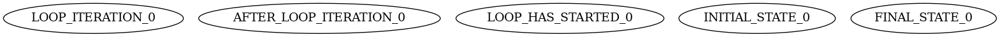

- Generated by
 1.8.17
1.8.17
|
state_machine_cpp
|
Hey! Ready to implement your first algorithm with state_machine_cpp ? Great! I hope you have already installed it, if not, please check the README.md file to see how it's easily done. Otherwise, let's dive in!
In this tutorial we'll be implementing a very simple example. It consists in a for loop printing out each iteration number. As you know, every thing here is nothing but states and transitions between states. In fact, I'll give you right away the overall shape of the algorithm we are trying to implement:
Simply put, the algorithm execution will start at the INITIAL_STATE and the corresponding transition will apply a baby step to go from INITIAL_STATE to the LOOP_CONDITION_EVALUATION state. The corresponding transition, in this case, will simply initialize the counter to 0. Then the algorithm will be in the LOOP_CONDITION_EVALUATION state. Again, the corresponding transition will be applied! This transition can be viewed as an "if" in C++. The action associated to this transition is therefore only to evaluate whether the iteration counter is less or greater than the maximum iteration count. If it is less then the BEGIN_OF_ITERATION state will be the next state of the algorithm. If not, FINAL_STATE will be the next state. I believe you can understand what follows in our story. Let's rather go straight on implementing it!
Be sure to be
using namespace state_machine_cpp;and#include<state_machine_cpp/basics.h>;)
The first thing to define when you implement an algorithm in forms of a state machine is the set of states you will consider. Let us therefore create a state ID for each state of the algorithm. This can be done with the class State::Id as follows:
We make this variable both const and static since we do not expect the state id to change throughout the execution of the algorithm and we want it to be globally accessible so that other developers can use those state ids for their own purpose (this will become more clear in the following tutorials). Note that the name of the state is repeated. Indeed, INITIAL_STATE corresponds to the C++ variable name while "ForLoop::INITIAL_STATE" corresponds to the name of the state within the state_machine_cpp library. We advise you to make them consistent as it will be easier to debug your code and easier to share, though it is not necessary. Moreover, and this will be discussed more in details in the "Organize your code" tutorial, we advise you to prefix your state name with a sort of "namespace" equal to the name (or an acronym) of your algorithm builder. Here, we therefore chose "ForLoop::INITIAL_STATE" to name the INITIAL_STATE state;
All the other states must be defined as well, see how it's done:
In state_machine_cpp, algorithms are built dynamically by means of an algorithm builder. To create your own algorithm, you therefore need to create a child class of the Algorithm::Builder class. Let's see:
Note that we have declared our builder as final. This is because builder are not aimed to be further derived. However, the keyword "final" is not mandatory.
The Algorithm::Builder class has a virtual pure method called build which we must override to define our algorithm. It takes three arguments which represent the set of states, the set of transitions and the set of layers. Layers will be explained in a subsequent tutorial and relate to somehow "advanced" features of the library. We won't talk about it in this tutorial.
Now let's add our new states to our algorithm.
Adding a state to an algorithm is rather easy and is done as follows:
This will add the states to our algorithm. All this sounds a bit abstract to you ? Let's see it in action!
We will now try to instantiate our algorithm so as to be able to run it. Clearly, it is not finished though as it is just a collection of states without any transition. However, you'll see that we can visualize it easily.
To instantiate our algorithm, we need an algorithm instance from the class Algorithm::Instance and to call the function Algorithm::build on it. See rather:
You may now run your code! If you've done things right, your code should compile, yet, it seems to be doing nothing. Actually, this is not quite true. What happens is that you're algorithm has been created but we did not ask to run it or plot it or do anything with it. Let's visualize it with Algorithm::plot!
This function will create a file entitled "my_algorithm.dot" which contains a representation of the algorithm you are building. DOT files can be rendered as PNG images using graphviz. Indeed, if you set the last parameter to true, the function will also automatically generate a PNG image by calling graphviz (this works on UNIX-based system by calling graphviz through a system call to dot -Tpng). The expected output is as follows:

As you can see, all our states have been added. Yet they are not connected. Trying to run this algorithm will result in an exception to be thrown. For the time being, you may also want to analyze the sanity of your algorithm. That is, check for errors or inconsistent behaviors. To do so, you may use the function Algorithm::sanity_check as follows:
Doing so and executing your code will print out the following report:
Clearly, the sanity check tells us that we have to add some transitions. Let's do this!
Transitions are made of two things: first, they consist in going from one state to another. Moreover, they correspond to a given action. Actions are handled by so-called transition handlers and are normal C++ functions. For instance, the following handler will handle the transition from the FINAL_STATE to itself and simply displays a message saying that the loop is over:
You probably have noticed that the handler takes an argument called context which is a reference to an object of the class Context. The Context object will contain everything related to the "context" of the call for this function. It is through the context that we will be able to reach our attributes. Our attributes, for our purpose, are simply an iteration counter and a threshold to stop the loop. Let us define our attributes in the following section!
As anticipated, our attributes are rather simple and consist in two ints. Let us create a class which contains them:
Rather simple right ? Let's see how we can access it from the context!
To show how we can use our attributes through the Context object, let's create a handler for the INITIAL_STATE. The transition from INITIAL_STATE goes to LOOP_CONDITION_EVALUATION and sets the iteration counter to 0. See how it's done:
Very simple, right? All the other transition handlers are defined similarly. One special transition handler however is the one handling the LOOP_CONDITION_EVALUATION state. Indeed, this transition is conditional, i.e., if the counter is less than the threshold the algorithm should move to BEGIN_OF_ITERATION, otherwise, it should move to FINAL_STATE. Its handler is therefore particular and must return a boolean which will be evaluated to route the algorithm.
The routing associated to the value of the boolean will be decided when adding the transitions to the algorithm. Indeed, here, we are only defining orphan functions for now.
All the other transitions are as follows:
Now is time to add all our transitions to define our algorithm. This can be done with transitions.create to create trivial transitions from one to another and transitions.create_if to create conditional transitions. The algorithm builder's build method will then look like the following:
As you can see, Algorithm::Builder::Transitions::create_if is used as follows: it creates a transitions from the first argument to the second argument if the handler returns true and to the third otherwise.
Trying to visualize our algorithm will yield the following:
The sanity check should also not complain anymore as our algorithm is well-defined.
Well, now is time to run our algorithm!
Running an algorithm is done with the Algorithm::run function. Its argument are (1) the algorithm instance to execute and (2) the context object. We therefore need to create a context object. The context object creation is very simple and done as follows:
We can then run our algorithm as follows:
And voilà! You have executed you're first algorithm using state_machine_cpp. You should get printed the following:
We have successfully executed our algorithm. The execution start from the INITIAL_STATE, then goes to LOOP_CONDITION_EVALUATION, and so on. Note that it is possible to see each state that our algorithm traverses so as, for instance, to debug it when developping new algorithms! To do that, simply build the algorithm in Debug mode, which is done as follow:
Thus, running the algorithm by calling Algorithm::run now outputs the following,
That's it for now! Let meet in the next tutorial!
1.8.17